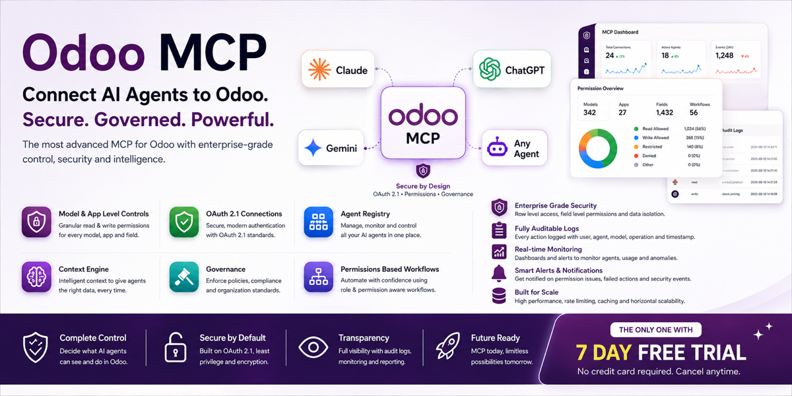
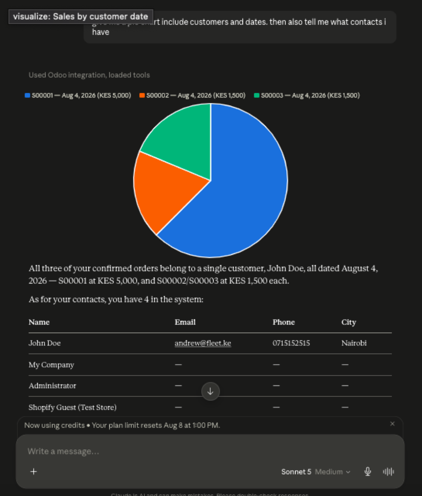
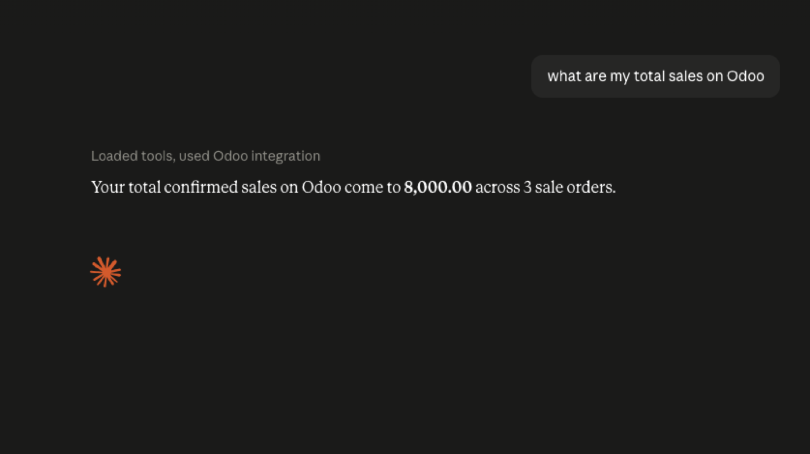
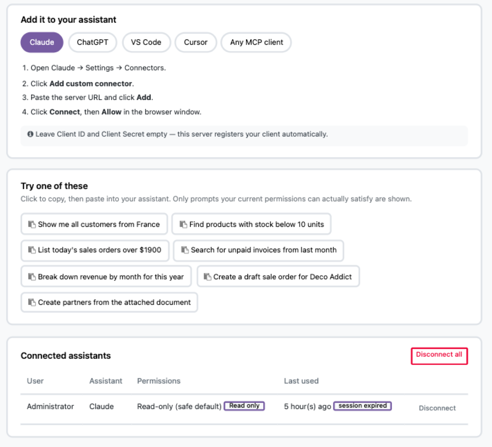
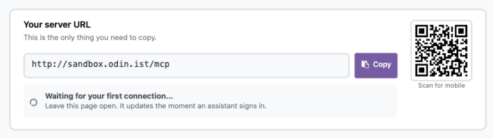
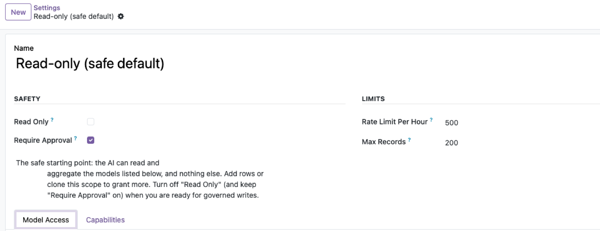
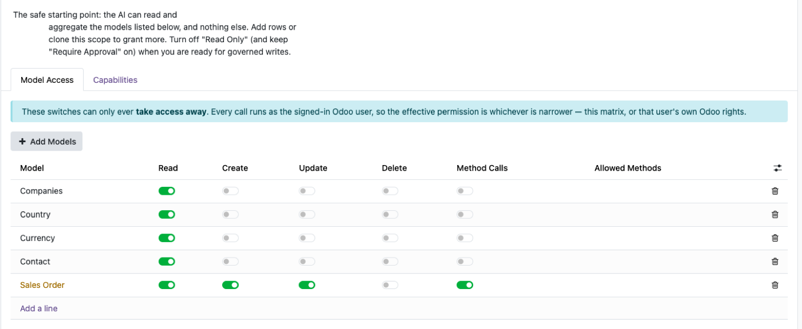
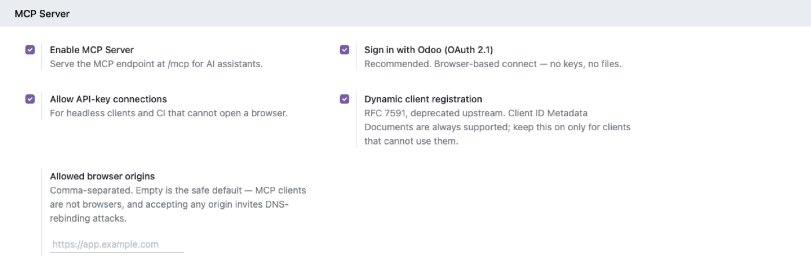
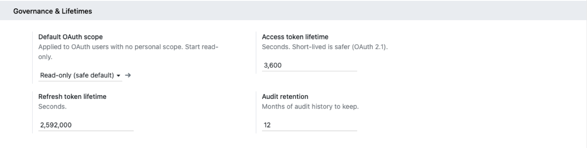

<section class="oe_container">
<div class="mcp-listing">
<style>
.mcp-listing{font-family:-apple-system,'Segoe UI',Roboto,Helvetica,Arial,sans-serif;color:#1a1033;max-width:1120px;margin:0 auto;line-height:1.6;background:#fff}
.mcp-listing *{box-sizing:border-box}
.mcp-section{padding:56px 24px}
.mcp-inner{max-width:1040px;margin:0 auto}
.mcp-eyebrow{font-size:12px;font-weight:700;letter-spacing:.06em;text-transform:uppercase;color:#6d28d9;text-align:center;margin:0 0 8px}
.mcp-h2{font-size:27px;font-weight:800;text-align:center;letter-spacing:-.01em;margin:0 0 10px;color:#1a1033}
.mcp-lead{text-align:center;color:#5b6472;max-width:680px;margin:0 auto 34px;font-size:16px}

/* Hero — light, matches the banner art */
.mcp-hero{background:linear-gradient(160deg,#ffffff 0%,#f8f5ff 55%,#f0e9ff 100%);border:1px solid #ece4fb;border-radius:24px;padding:52px 40px}
.mcp-hero-grid{display:flex;gap:36px;align-items:center;flex-wrap:wrap}
.mcp-hero-copy{flex:1 1 420px}
.mcp-hero h1{font-size:36px;margin:0 0 10px;font-weight:800;letter-spacing:-.02em;color:#1a1033}
.mcp-hero-sub{font-size:18px;margin:0 0 18px;font-weight:600;color:#5b21b6}
.mcp-hero p.mcp-hero-desc{font-size:15px;line-height:1.65;color:#525a6b;margin:0 0 20px;max-width:520px}
.mcp-badges{display:flex;flex-wrap:wrap;gap:8px}
.mcp-badge{display:inline-block;padding:7px 14px;border-radius:999px;background:#fff;border:1px solid #e6e1f5;font-weight:600;font-size:13px;color:#332b52;box-shadow:0 1px 3px rgba(45,20,90,.05)}
.mcp-hero-img{flex:1 1 380px;text-align:center}
.mcp-hero-img img{max-width:100%;border-radius:14px;box-shadow:0 18px 40px rgba(76,46,143,.18);border:1px solid #ece4fb}

/* Chat demo */
.mcp-demo-grid{display:flex;flex-wrap:wrap;gap:22px}
.mcp-demo-card{flex:1 1 420px;background:#0f1020;border-radius:16px;padding:8px;box-shadow:0 12px 30px rgba(15,16,32,.18)}
.mcp-demo-card img{width:100%;border-radius:10px;display:block}
.mcp-demo-cap{padding:14px 10px 6px;font-size:13.5px;color:#9891b0;text-align:center}

/* Chip cloud */
.mcp-cloud-group{margin-bottom:26px}
.mcp-cloud-label{font-size:12px;font-weight:800;color:#6d28d9;text-transform:uppercase;letter-spacing:.05em;margin:0 0 12px;text-align:center}
.mcp-chip-row{display:flex;flex-wrap:wrap;gap:10px;justify-content:center}
.mcp-chip{display:inline-flex;align-items:center;gap:8px;background:#fff;border:1px solid #e6e1f5;border-radius:999px;padding:9px 16px 9px 12px;font-size:14px;font-weight:700;color:#332b52;box-shadow:0 1px 3px rgba(45,20,90,.05)}
.mcp-dot{width:9px;height:9px;border-radius:50%;flex:0 0 auto;display:inline-block}
.mcp-dot-purple{background:#8b5cf6}
.mcp-dot-black{background:#1a1033}
.mcp-dot-green{background:#22c55e}
.mcp-dot-amber{background:#d97706}

/* Feature / screen deep-dives */
.mcp-feat{padding:52px 24px;border-top:1px solid #f0edf9}
.mcp-feat-grid{display:flex;gap:32px;align-items:center;flex-wrap:wrap}
.mcp-feat-grid.mcp-reverse{flex-direction:row-reverse}
.mcp-feat-media{flex:1 1 520px;min-width:280px}
.mcp-feat-media img{width:100%;border-radius:12px;border:1px solid #e6e1f5;box-shadow:0 8px 24px rgba(30,10,70,.08)}
.mcp-feat-copy{flex:1 1 320px;min-width:260px}
.mcp-tag{display:inline-flex;align-items:center;gap:7px;font-size:12.5px;font-weight:800;text-transform:uppercase;letter-spacing:.04em;padding:5px 12px 5px 9px;border-radius:999px;margin-bottom:14px;background:#f7f4ff;color:#5b21b6}
.mcp-feat-copy h2{font-size:23px;font-weight:800;color:#1a1033;margin:0 0 8px}
.mcp-feat-copy p{font-size:14.5px;color:#5b6472;margin:0 0 16px;line-height:1.6}
.mcp-cap-box{background:#fff;border-radius:12px;overflow:hidden;border:1px solid #e6e1f5}
.mcp-cap{padding:12px 16px;border-bottom:1px solid #f2effa;font-size:14px;color:#332b52;display:flex;align-items:center;gap:10px}
.mcp-cap:last-child{border-bottom:none}
.mcp-cap .mcp-tick{color:#7c3aed;font-weight:900;flex:0 0 auto}

/* Comparison table */
.mcp-table{width:100%;border-collapse:collapse;font-size:14.5px;border-radius:14px;overflow:hidden;border:1px solid #e6e1f5}
.mcp-table th{background:#f7f4ff;padding:13px 16px;text-align:left;font-weight:800;color:#1a1033}
.mcp-table td{padding:13px 16px;border-top:1px solid #f2effa}
.mcp-table td.ok{color:#1e7d46;font-weight:700}
.mcp-table td.no{color:#b42318;font-weight:700}

/* Security / differentiators band */
.mcp-diff-band{background:#1a1033;border-radius:20px;padding:44px 36px}
.mcp-diff-band .mcp-eyebrow{color:#c4a6ff}
.mcp-diff-band .mcp-h2{color:#fff}
.mcp-diff-band .mcp-lead{color:#c9c2e0}
.mcp-diff-grid{display:flex;flex-wrap:wrap;gap:14px}
.mcp-diff-card{flex:1 1 230px;background:rgba(255,255,255,.06);border:1px solid rgba(196,166,255,.3);border-radius:14px;padding:18px}
.mcp-diff-card .mcp-ico{font-size:22px;display:block;margin-bottom:8px}
.mcp-diff-card h4{margin:0 0 4px;font-size:14.5px;font-weight:700;color:#fff}
.mcp-diff-card p{margin:0;font-size:12.5px;color:#b9b0d6;line-height:1.5}

/* Benefits */
.mcp-benefit-grid{display:flex;flex-wrap:wrap;gap:12px;justify-content:center}
.mcp-benefit{display:inline-flex;align-items:center;gap:9px;background:#f7f4ff;border-radius:10px;padding:12px 16px;font-size:14.5px;font-weight:700;color:#332b52;flex:1 1 340px}
.mcp-benefit .mcp-tick{color:#7c3aed;font-weight:900;flex:0 0 auto}

/* FAQ */
.mcp-faq{background:#fff;border:1px solid #e6e1f5;border-radius:14px;padding:18px 22px;margin-bottom:12px}
.mcp-faq b{display:block;margin-bottom:4px;color:#1a1033}
.mcp-faq p{margin:0;color:#5b6472;font-size:14px}

/* CTA */
.mcp-cta{background:linear-gradient(135deg,#2c1a5e,#6d28d9);border-radius:20px;padding:44px;text-align:center;color:#fff}
.mcp-cta h2{color:#fff;font-size:26px;margin:0 0 8px;font-weight:800}
.mcp-cta p{opacity:.9;margin:0 0 22px;font-size:15px}
.mcp-btn-row a{display:inline-block;padding:12px 26px;border-radius:10px;text-decoration:none;font-weight:700;font-size:14.5px;margin:0 6px 10px}
.mcp-btn-primary{background:#fff;color:#4c1d95}
.mcp-btn-ghost{background:rgba(255,255,255,.12);color:#fff;border:1px solid rgba(255,255,255,.4)}
.mcp-cta .mcp-email{font-size:13px;opacity:.75;margin-top:14px}

.mcp-warn{background:#fef2f2;border:1px solid #fecaca;border-radius:14px;padding:20px 24px;font-size:13.5px;color:#991b1b;line-height:1.6;text-align:center}

@media(max-width:640px){
  .mcp-hero{padding:34px 22px}
  .mcp-hero h1{font-size:28px}
  .mcp-section,.mcp-feat{padding:40px 16px}
}
</style>

<!-- ============================= HERO ============================= -->
<div class="mcp-section" style="padding-top:8px">
  <div class="mcp-inner mcp-hero">
    <div class="mcp-hero-grid">
      <div class="mcp-hero-copy">
        <h1>Odoo MCP</h1>
        <p class="mcp-hero-sub">Chat with your Odoo. Safely.</p>
        <p class="mcp-hero-desc">
          Connect Claude, ChatGPT, Gemini, Cursor or any MCP client to Odoo
          with one-click OAuth 2.1. Every AI action runs as the real
          signed-in user — scoped, rate-limited, audited and
          approval-gated. No extra server, no external dependencies.
        </p>
        <div class="mcp-badges">
          <span class="mcp-badge">OAuth 2.1 · PKCE</span>
          <span class="mcp-badge">Runs Inside Odoo</span>
          <span class="mcp-badge">Zero Dependencies</span>
          <span class="mcp-badge">Multi-Company</span>
        </div>
      </div>
      <div class="mcp-hero-img">
        
      </div>
    </div>
  </div>
</div>

<!-- ===================== ASK IN PLAIN LANGUAGE ===================== -->
<div class="mcp-section">
  <div class="mcp-inner">
    <p class="mcp-eyebrow">See it, don't just take our word for it</p>
    <h2 class="mcp-h2">Ask in plain language. Get an answer, not a JSON blob.</h2>
    <p class="mcp-lead">These are real conversations against a live Odoo database — the assistant picks the tools, runs them, and explains the result.</p>
    <div class="mcp-demo-grid">
      <div class="mcp-demo-card">
        
        <p class="mcp-demo-cap">"Give me a pie chart including customers and dates, then tell me what contacts I have" — one prompt, two tools, one answer.</p>
      </div>
      <div class="mcp-demo-card">
        
        <p class="mcp-demo-cap">"What are my total sales on Odoo" — answered in one turn, tools loaded automatically.</p>
      </div>
    </div>
  </div>
</div>

<!-- ======================= FEATURE CHIP CLOUD ======================== -->
<div class="mcp-section">
  <div class="mcp-inner">
    <p class="mcp-eyebrow">What's actually in the box</p>
    <h2 class="mcp-h2">Not a connector. A governance layer.</h2>
    <p class="mcp-lead">A bare MCP connector hands the AI a shared admin token and hopes for the best. This is what makes AI-over-ERP something your security team will actually approve.</p>

    <div class="mcp-cloud-group">
      <p class="mcp-cloud-label">Identity &amp; security</p>
      <div class="mcp-chip-row">
        <span class="mcp-chip"><span class="mcp-dot mcp-dot-purple"></span>OAuth 2.1 + PKCE</span>
        <span class="mcp-chip"><span class="mcp-dot mcp-dot-black"></span>Runs as the Real User</span>
        <span class="mcp-chip"><span class="mcp-dot mcp-dot-purple"></span>Audience-Bound Tokens</span>
        <span class="mcp-chip"><span class="mcp-dot mcp-dot-black"></span>Secrets Hashed at Rest</span>
        <span class="mcp-chip"><span class="mcp-dot mcp-dot-purple"></span>Refresh Rotation</span>
      </div>
    </div>

    <div class="mcp-cloud-group">
      <p class="mcp-cloud-label">Governance</p>
      <div class="mcp-chip-row">
        <span class="mcp-chip"><span class="mcp-dot mcp-dot-amber"></span>Read-Only by Default</span>
        <span class="mcp-chip"><span class="mcp-dot mcp-dot-green"></span>Human Approval Gate</span>
        <span class="mcp-chip"><span class="mcp-dot mcp-dot-amber"></span>Per-Model Scopes</span>
        <span class="mcp-chip"><span class="mcp-dot mcp-dot-green"></span>Rate Limiting</span>
        <span class="mcp-chip"><span class="mcp-dot mcp-dot-amber"></span>Full Audit Log</span>
      </div>
    </div>

    <div class="mcp-cloud-group">
      <p class="mcp-cloud-label">Intelligence</p>
      <div class="mcp-chip-row">
        <span class="mcp-chip"><span class="mcp-dot mcp-dot-purple"></span>Business Context Engine</span>
        <span class="mcp-chip"><span class="mcp-dot mcp-dot-black"></span>Prompt Library</span>
        <span class="mcp-chip"><span class="mcp-dot mcp-dot-purple"></span>Reports &amp; Dashboards</span>
        <span class="mcp-chip"><span class="mcp-dot mcp-dot-black"></span>Capability Registry</span>
      </div>
    </div>
  </div>
</div>

<!-- ==================== SCREEN 1 — CONNECT ==================== -->
<div class="mcp-feat" style="background:#fbfaff">
  <div class="mcp-inner mcp-feat-grid">
    <div class="mcp-feat-media">
      
    </div>
    <div class="mcp-feat-copy">
      <span class="mcp-tag"><span class="mcp-dot mcp-dot-purple"></span>Connect</span>
      <h2>Connected in Two Clicks</h2>
      <p>One page has everything: pick your client, paste the URL, click
        Allow. Starter prompts are filtered to what your permissions can
        actually satisfy, so the first try works.</p>
      <div class="mcp-cap-box">
        <div class="mcp-cap"><span class="mcp-tick">✓</span>Claude, ChatGPT, VS Code, Cursor or any MCP client</div>
        <div class="mcp-cap"><span class="mcp-tick">✓</span>No client ID or secret to copy — the server registers itself</div>
        <div class="mcp-cap"><span class="mcp-tick">✓</span>Copy-to-clipboard starter prompts, scoped to your access</div>
        <div class="mcp-cap"><span class="mcp-tick">✓</span>Connected assistants listed with last-used and one-click disconnect</div>
      </div>
    </div>
  </div>
</div>

<!-- ==================== SCREEN 2 — QR / MOBILE ==================== -->
<div class="mcp-feat">
  <div class="mcp-inner mcp-feat-grid mcp-reverse">
    <div class="mcp-feat-media">
      
    </div>
    <div class="mcp-feat-copy">
      <span class="mcp-tag"><span class="mcp-dot mcp-dot-black"></span>Mobile</span>
      <h2>One URL. That's the Whole Setup.</h2>
      <p>Copy it, or scan the QR code from your phone. The status line
        updates the moment an assistant actually signs in — no refreshing,
        no guessing whether it worked.</p>
      <div class="mcp-cap-box">
        <div class="mcp-cap"><span class="mcp-tick">✓</span>One server URL — no config files</div>
        <div class="mcp-cap"><span class="mcp-tick">✓</span>QR code for mobile clients</div>
        <div class="mcp-cap"><span class="mcp-tick">✓</span>Live "waiting for your first connection" status</div>
      </div>
    </div>
  </div>
</div>

<!-- ==================== SCREEN 3 — SCOPES ==================== -->
<div class="mcp-feat" style="background:#fbfaff">
  <div class="mcp-inner mcp-feat-grid">
    <div class="mcp-feat-media">
      
    </div>
    <div class="mcp-feat-copy">
      <span class="mcp-tag"><span class="mcp-dot mcp-dot-amber"></span>Scopes</span>
      <h2>Read-Only, Until You Say Otherwise</h2>
      <p>The shipped default scope can read and aggregate a short list of
        models and nothing else. Turning on writes and turning off
        approval are two separate, deliberate decisions.</p>
      <div class="mcp-cap-box">
        <div class="mcp-cap"><span class="mcp-tick">✓</span>Read Only and Require Approval as independent switches</div>
        <div class="mcp-cap"><span class="mcp-tick">✓</span>Rate limit per hour and a max-records cap</div>
        <div class="mcp-cap"><span class="mcp-tick">✓</span>Clone a scope to grant more — never edit your way into surprise access</div>
      </div>
    </div>
  </div>
</div>

<!-- ==================== SCREEN 4 — MODEL PERMISSIONS ==================== -->
<div class="mcp-feat">
  <div class="mcp-inner mcp-feat-grid mcp-reverse">
    <div class="mcp-feat-media">
      
    </div>
    <div class="mcp-feat-copy">
      <span class="mcp-tag"><span class="mcp-dot mcp-dot-purple"></span>Model Permissions</span>
      <h2>One Matrix, Every Model</h2>
      <p>Read, Create, Update, Delete and Method Calls, per model, in one
        list — with an explicit allow-list for which business methods the
        AI may actually invoke.</p>
      <div class="mcp-cap-box">
        <div class="mcp-cap"><span class="mcp-tick">✓</span>Four data operations plus method calls, per model</div>
        <div class="mcp-cap"><span class="mcp-tick">✓</span>Allowed Methods — empty permits nothing, not everything</div>
        <div class="mcp-cap"><span class="mcp-tick">✓</span>Switches can only ever take access away, never add it</div>
        <div class="mcp-cap"><span class="mcp-tick">✓</span>Effective permission is always the narrower of this matrix and the user's own Odoo rights</div>
      </div>
    </div>
  </div>
</div>

<!-- ==================== SCREEN 5 — SETTINGS ==================== -->
<div class="mcp-feat" style="background:#fbfaff">
  <div class="mcp-inner mcp-feat-grid">
    <div class="mcp-feat-media">
      
    </div>
    <div class="mcp-feat-copy">
      <span class="mcp-tag"><span class="mcp-dot mcp-dot-black"></span>Settings</span>
      <h2>Every Switch, One Screen</h2>
      <p>Turn the server on, choose how clients connect, and decide whether
        browser-based clients are trusted at all — all from Settings, no
        code, no server restart.</p>
      <div class="mcp-cap-box">
        <div class="mcp-cap"><span class="mcp-tick">✓</span>Enable MCP Server — the master switch</div>
        <div class="mcp-cap"><span class="mcp-tick">✓</span>Sign in with Odoo (OAuth 2.1) — the recommended path</div>
        <div class="mcp-cap"><span class="mcp-tick">✓</span>API-key connections for headless clients and CI</div>
        <div class="mcp-cap"><span class="mcp-tick">✓</span>Allowed browser origins — empty by default, on purpose</div>
      </div>
    </div>
  </div>
</div>

<!-- ==================== SCREEN 6 — GOVERNANCE ==================== -->
<div class="mcp-feat">
  <div class="mcp-inner mcp-feat-grid mcp-reverse">
    <div class="mcp-feat-media">
      
    </div>
    <div class="mcp-feat-copy">
      <span class="mcp-tag"><span class="mcp-dot mcp-dot-amber"></span>Governance</span>
      <h2>Short-Lived Tokens, Long Memory</h2>
      <p>Access tokens expire in an hour by default — OAuth 2.1's own
        recommendation. Refresh tokens rotate on every use. Audit history
        sticks around as long as you need it to.</p>
      <div class="mcp-cap-box">
        <div class="mcp-cap"><span class="mcp-tick">✓</span>Default OAuth scope applied to users with none of their own</div>
        <div class="mcp-cap"><span class="mcp-tick">✓</span>Access token lifetime — short-lived by default</div>
        <div class="mcp-cap"><span class="mcp-tick">✓</span>Refresh token lifetime, rotated on every refresh</div>
        <div class="mcp-cap"><span class="mcp-tick">✓</span>Configurable audit retention in months</div>
      </div>
    </div>
  </div>
</div>

<!-- ============================ COMPARISON =========================== -->
<div class="mcp-section">
  <div class="mcp-inner">
    <p class="mcp-eyebrow">The honest comparison</p>
    <h2 class="mcp-h2">Odoo MCP vs. a plain MCP connector</h2>
    <table class="mcp-table">
      <tr><th>Capability</th><th>Plain connector</th><th>Odoo MCP</th></tr>
      <tr><td>OAuth 2.1 one-click connect</td><td class="no">Sometimes</td><td class="ok">✓ Built-in Authorization Server</td></tr>
      <tr><td>Runs as the real user, no shared token</td><td class="no">Often a shared admin token</td><td class="ok">✓ Per-identity</td></tr>
      <tr><td>Per-model scopes &amp; method allow-lists</td><td class="no">✗</td><td class="ok">✓</td></tr>
      <tr><td>Human approval for writes</td><td class="no">✗</td><td class="ok">✓</td></tr>
      <tr><td>Full audit log + token/cost tracking</td><td class="no">✗</td><td class="ok">✓</td></tr>
      <tr><td>Rate limiting</td><td class="no">✗</td><td class="ok">✓</td></tr>
      <tr><td>Business context &amp; prompt library</td><td class="no">✗</td><td class="ok">✓</td></tr>
      <tr><td>External Python dependencies</td><td class="no">Often</td><td class="ok">✓ None</td></tr>
    </table>
  </div>
</div>

<!-- ======================== SECURITY / DIFFERENTIATORS ========================= -->
<div class="mcp-section">
  <div class="mcp-inner mcp-diff-band">
    <p class="mcp-eyebrow">Security you can defend in a review</p>
    <h2 class="mcp-h2">Built to survive a security team's questions</h2>
    <p class="mcp-lead">Not marketing claims — the actual protocol decisions underneath.</p>
    <div class="mcp-diff-grid">
      <div class="mcp-diff-card">
        <span class="mcp-ico">🔐</span>
        <h4>OAuth 2.1 + PKCE (S256)</h4>
        <p>Self-contained Authorization Server: RFC 9728/8414 discovery, RFC 7591 dynamic registration, RFC 8707 audience-bound tokens.</p>
      </div>
      <div class="mcp-diff-card">
        <span class="mcp-ico">🧾</span>
        <h4>Secrets hashed at rest</h4>
        <p>Only SHA-256 digests are stored for keys, codes and tokens. Plaintext is shown exactly once.</p>
      </div>
      <div class="mcp-diff-card">
        <span class="mcp-ico">🛡️</span>
        <h4>Defence in depth</h4>
        <p>The MCP scope can only narrow native Odoo permissions, never widen them. Multi-company isolation is preserved underneath.</p>
      </div>
      <div class="mcp-diff-card">
        <span class="mcp-ico">🔁</span>
        <h4>Refresh rotation</h4>
        <p>Every refresh revokes the previous refresh token — a stolen token has a short, shrinking window.</p>
      </div>
      <div class="mcp-diff-card">
        <span class="mcp-ico">🧩</span>
        <h4>Dual-era protocol support</h4>
        <p>Speaks both the modern per-request MCP revision and the older handshake-based ones — old and new clients both just work.</p>
      </div>
      <div class="mcp-diff-card">
        <span class="mcp-ico">📦</span>
        <h4>Zero external dependencies</h4>
        <p>No extra process, no middleware, no <code>mcp-remote</code>. The server is native to Odoo.</p>
      </div>
    </div>
  </div>
</div>

<!-- ============================= BENEFITS =========================== -->
<div class="mcp-section">
  <div class="mcp-inner">
    <p class="mcp-eyebrow">Why teams install it</p>
    <h2 class="mcp-h2">Give the AI exactly what the person already has</h2>
    <div class="mcp-benefit-grid">
      <span class="mcp-benefit"><span class="mcp-tick">✓</span>Runs as the signed-in user — never a shared admin token</span>
      <span class="mcp-benefit"><span class="mcp-tick">✓</span>Read-only by default, writes are opt-in</span>
      <span class="mcp-benefit"><span class="mcp-tick">✓</span>Every write can require human approval before it executes</span>
      <span class="mcp-benefit"><span class="mcp-tick">✓</span>One attributable audit row per call</span>
      <span class="mcp-benefit"><span class="mcp-tick">✓</span>No API keys, no config files, no extra server</span>
      <span class="mcp-benefit"><span class="mcp-tick">✓</span>Works with Claude, ChatGPT, Gemini, Cursor, Copilot, VS Code</span>
      <span class="mcp-benefit"><span class="mcp-tick">✓</span>Multi-company isolation preserved automatically</span>
      <span class="mcp-benefit"><span class="mcp-tick">✓</span>Zero external Python dependencies to patch or audit</span>
    </div>
  </div>
</div>

<!-- ============================== FAQ ============================== -->
<div class="mcp-section" style="padding-top:0">
  <div class="mcp-inner">
    <h2 class="mcp-h2">FAQ</h2>
    <div class="mcp-faq"><b>Which AI clients are supported?</b><p>Any MCP client speaking Streamable HTTP — Claude, ChatGPT, Gemini, Cursor, Copilot, VS Code and more.</p></div>
    <div class="mcp-faq"><b>Do I need an extra server or proxy?</b><p>No. The MCP server runs inside Odoo with zero external Python dependencies.</p></div>
    <div class="mcp-faq"><b>Can the AI get admin rights?</b><p>Never. It operates as the connected user, bounded further by the governance scope — the scope can only narrow what that user could already do.</p></div>
    <div class="mcp-faq"><b>Can it change data?</b><p>Only if the scope allows writes — and you can require human approval for every one before it executes.</p></div>
    <div class="mcp-faq"><b>Is my data sent to train a model?</b><p>This module only exposes an endpoint; what your AI provider does with prompts is governed by your own agreement with them. Choose a read-only scope and blacklist sensitive fields to be conservative.</p></div>
  </div>
</div>

<!-- ============================ SUPPORT / CTA ======================== -->
<div class="mcp-section">
  <div class="mcp-inner mcp-cta">
    <h2>Give your team an AI that respects your ERP</h2>
    <p>Install Odoo MCP and connect your first assistant in minutes.</p>
    <div class="mcp-btn-row">
      <a class="mcp-btn-primary" href="mailto:developers@fleet.ke">Request a Demo</a>
      <a class="mcp-btn-ghost" href="mailto:developers@fleet.ke">Contact Support</a>
    </div>
    <p class="mcp-email">developers@fleet.ke &nbsp;·&nbsp; support@odin.ist &nbsp;·&nbsp; andrew@fleet.ke &nbsp;·&nbsp; Odoo 19 &amp; 18 · Community · Enterprise · Odoo.sh</p>
  </div>
</div>

<!-- Duplicate-seller notice -->
<div class="mcp-section" style="padding-top:0">
  <div class="mcp-inner mcp-warn">
    <strong>Beware of duplicate listings and unofficial sellers.</strong><br/>
    Download Odoo MCP only from this official listing on the Odoo Apps
    Store to be sure you're getting genuine updates and support.
  </div>
</div>

</div>
</section>
